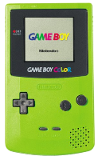
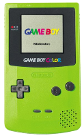

PONG
A PONG volt az első nagy népszerűséget és széleskörű ismertséget szerzett videojáték.
1972-ben készítette el Allan Alcorn, az Atari cég mérnöke. Ez egy asztalitenisz játék,
amit egyszerű kétdimenziós grafikával oldottak meg. A két játékos egy-egy függőlegesen mozgatható ütőt irányít.
A cél a labda sikeres visszaütése. Amennyiben ezt valamelyik játékos elvéti, az ellenfele pontszáma eggyel nő.
Az első játéktermi változatok egy fa dobozon belül tartalmaztak egy televízió készüléket,
a játékot megvalósító elektronikát és természetesen a pénzgyűjtő egységet.

>


 
